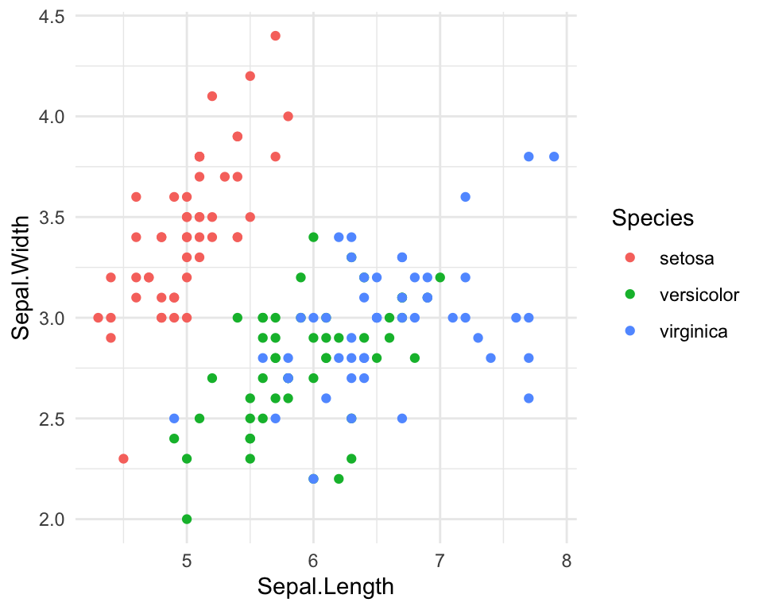
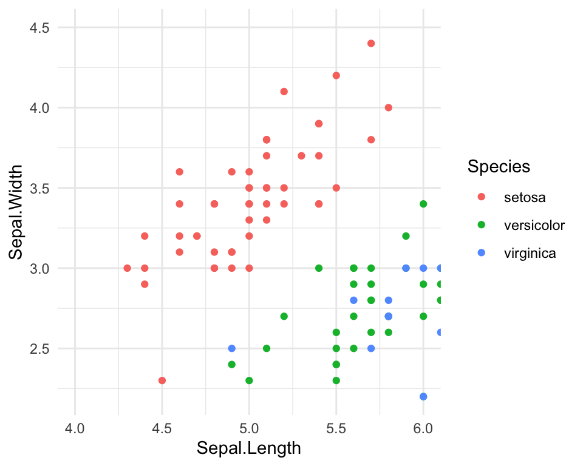
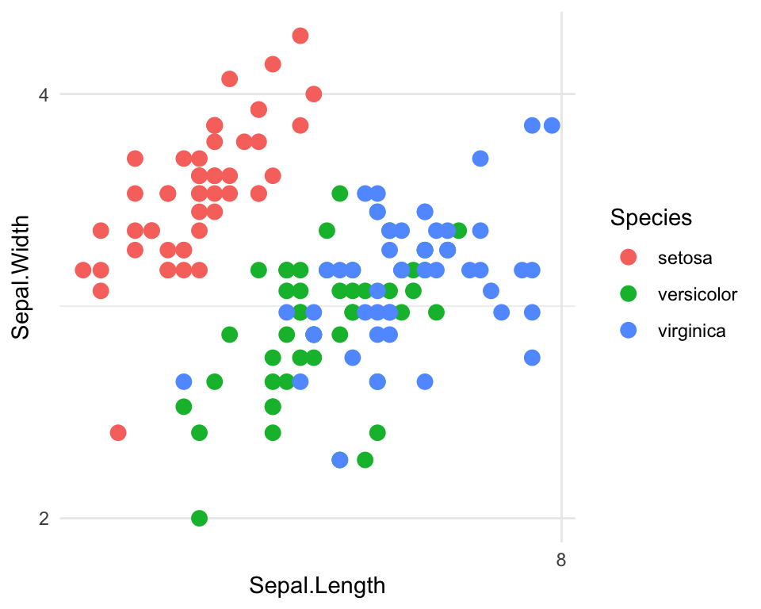
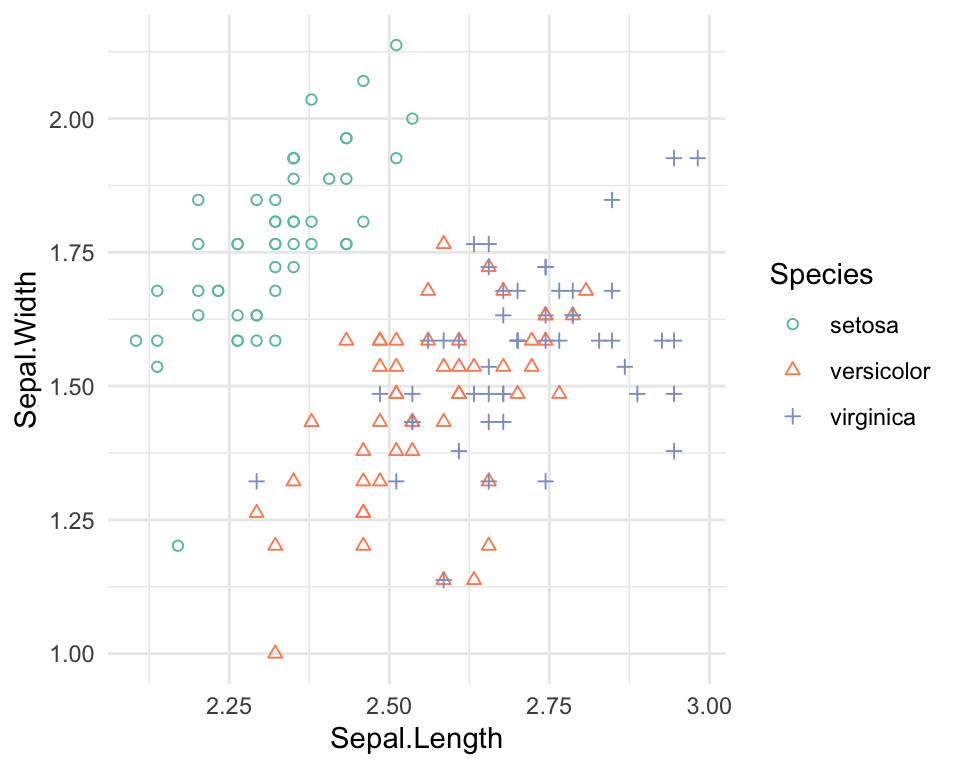
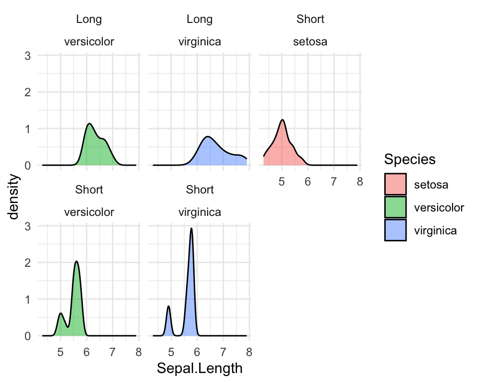

Chapter 4 Visualisering - ggplot2 dag 2

4.1 Indledning og videoer
I det nuværende emne udvider du værktøjskassen af kommandoer i pakken ggplot2, så at du kan opnå større fleksibilitet og appel i dine visualiseringer. Jeg anbefaler, at du bruger notaterne som en form for reference samtidig at du arbejder med problemstillingerne.
4.1.1 Læringsmålene
I skal være i stand til at:
- Arbejde fleksibelt med koordinatsystemer - transformere, modificere og “flippe” x- og y-aksen.
- Udvide brugen af farver og former.
- Tilføje tekst direkte på plottet ved hjælpe af
geom_text(). - Bruge
facet_grid()ellerfacet_wrap()til at opdele plots efter en katagorisk variabel. - Gemme dit færdige plot i en fil.
library(ggplot2) #husk4.1.2 Video ressourcer
- Video 1: Koordinat systemer (2021)
Link her hvis det ikke virker nedenunder: https://player.vimeo.com/video/544201985
- Video 2: Farver og punkt former (2021)
Link her hvis det ikke virker nedenunder: https://player.vimeo.com/video/544218153
- Video 3: Labels -
geom_text()oggeom_text_repel()(2021)
Link her hvis det ikke virker nedenunder: https://player.vimeo.com/video/544226498
- Video 4 - Facets
Link her hvis det ikke virker nedenunder: https://player.vimeo.com/video/704140333
4.2 Koordinat systemer
Her arbejder vi videre med koordinater i pakken ggplot2.
4.2.1 Zoom (coord_cartesian(), expand_limits())
Man kan bruge funktionen coord_cartesian() til at zoome ind på et bestemt område på plottet. Indenfor coord_cartesian() angives xlim() og ylim(), som specificerer de øvre og nedre grænser langs henholdsvis x-aksen og y-aksen. Man kan også bruge xlim() og ylim() uden om coord_cartesian(), men i dette tilfælde bliver punkterne, som ikke kan ses i plottet (fordi deres koordinater ligger udenfor de angivne grænser), smidt væk (med en advarsel). Med coord_cartesian() beholder man til gengæld samtlige data, og man får således ikke en advarsel.
Nedenfor ses vores oprindelige scatter plot:
ggplot(iris, aes(x = Sepal.Length, y = Sepal.Width,color = Species)) +
geom_point() +
theme_minimal() 
Og her anvender jeg funktionen coord_cartesian() med xlim() og ylim() indenfor til at zoome ind på et ønsket område på plottet.
ggplot(iris, aes(x = Sepal.Length, y = Sepal.Width,color = Species)) +
geom_point() +
coord_cartesian(xlim = c(4,6), ylim = c(2.2,4.5)) +
theme_minimal() 
Du kan også zoome ud ved at bruge expand_limits(). For eksempel, hvis jeg gerne vil have punkterne \(x = 0\) og \(y = 0\) (c(0,0), eller “origin”) med i selve plottet:
ggplot(iris, aes(x=Sepal.Length, y=Sepal.Width,col=Species)) +
geom_point() +
expand_limits(x = 0, y = 0) +
theme_minimal() 
Det kan være brubart i situationer, hvor man for eksempel har flere etiketter omkring punkterne i selve plottet, som bedre kan ses, hvis man tillader lidt ekstra plads i plottets område.
4.2.2 Transformering af akserne - log, sqrt osv (scale_x_continuous).
Nogle gange kan det være svært at visualisere visse variabler på grund af deres fordeling. Hvis der er mange outliers i variablen, vil de fleste punkter samles i et lille område i plottet. Transformering af x-aksen og/eller y-aksen med enten log eller sqrt er især en populær tilgang, så dataene kan ses på en mere informativ måde.
ggplot(iris, aes(x=Sepal.Length, y=Sepal.Width,col=Species)) +
geom_point(size=3) +
scale_x_continuous(trans = "log2") +
scale_y_continuous(trans = "log2") +
theme_minimal() 
Man kan også prøve at bruge “sqrt” i stedet for “log2”. Formålet er, at hvis dataene fordeler sig mere normalt, kan de nemmere visualiseres i et plot ved at transformere dem med enten “sqrt” eller “log2”.
Det er dog vigtigt at bemærke, at dette er forskelligt fra at transformere selve dataene, som bruges i plottet. Jeg kan for eksempel opnå det samme resultat ved at ændre datasættet, før jeg anvender ggplot2. Her behøver jeg ikke at bruge scale_x_continuous(trans = "log2"), men jeg bemærker, at tallene på akserne reflekterer de transformerede data og ikke de oprindelige værdier. Beslutningen afhænger af, hvad man gerne vil opnå med analysen af dataene.
iris$Sepal.Length <- log2(iris$Sepal.Length)
iris$Sepal.Width <- log2(iris$Sepal.Width)
ggplot(iris, aes(x=Sepal.Length, y=Sepal.Width,col=Species)) +
geom_point(size=3) +
theme_minimal() 4.2.3 Flip coordinates (coord_flip)
Vi kan bruge coord_flip() til at spejle x-aksen på y-aksen og omvendt (det svarer til at drejer plottet 90 grader). Se følgende eksempel, hvor jeg først opretter variablen Sepal.Group, laver en barplot og anvender coord_flip for at få søjlerne til at stå vandret.
#Sepal.Group defineret som i går
iris$Sepal.Group <- ifelse(iris$Sepal.Length>mean(iris$Sepal.Length),"Long","Short")
ggplot(iris,aes(x=Species,fill=Sepal.Group)) +
geom_bar(stat="count",position="dodge",color="black") +
coord_flip() +
theme_minimal()Man kan ændre rækkefølgen af de tre Species ved at bruge funktionen scale_x_discrete() og angive den nye rækkefølge med indstillingen limits:
ggplot(iris,aes(x=Species,fill=Sepal.Group)) +
geom_bar(stat="count",position="dodge",color="black") +
coord_flip() +
scale_x_discrete(limits = c("virginica", "versicolor","setosa")) +
theme_minimal()4.3 Mere om farver og punkt former
Der er flere måder at specificere farver på i ggplot2. Man kan nøjes med den automatiske løsning, som er hurtig (og effektiv i mange situationer), eller man kan bruge den manuelle løsning, som tager lidt længere tid at kode, men er brugbar, hvis man gerne vil lave et plot til at præsentere for andre.
4.3.1 Automatisk farver
Vi i det sidste emne, at man automatisk kan få forskellige farver ved at benytte colour=Species indenfor aes() i den ggplot() funktion.
#automatisk løsning
ggplot(iris, aes(x=Sepal.Length, y=Sepal.Width, colour=Species)) +
geom_point() +
theme_minimal() 4.3.2 Manuelle farver
Hvis man foretrækker at bruge sine egne farver, kan man gøre det ved at benytte funktionen scale_colour_manual(). Her angiver man stadig colour=Species indenfor aes(), men man angiver derefter, hvilke bestemte farver de forskellige arter skal have indenfor scale_colour_manual, med indstillingen values.
#manuelt løsning
ggplot(iris, aes(x=Sepal.Length, y=Sepal.Width, colour=Species)) +
scale_colour_manual(values=c("purple", "yellow","pink")) +
geom_point() +
theme_minimal() En fantastisk pakke er RColorBrewer. Pakken indeholder mange forskellige “colour palettes”, det vil sige grupper af farver, der passer godt sammen. Man kan derfor slippe for selv at skulle sammensætte en farvekombination, der passer til plottet. Nogle af farvepaletterne tager også hensyn til, om man er farveblind, eller om man ønsker en farvegradient eller et sæt diskrete farver, som ikke ligner hinanden.
I følgende eksempel indlæser jeg pakken RColorBrewer og anvender funktionen scale_colour_brewer med indstillingen palette="Set1":
#install.packages("RColorBrewer")
library(RColorBrewer)
#manuelt løsning
ggplot(iris, aes(x=Sepal.Length, y=Sepal.Width, colour=Species)) +
scale_colour_brewer(palette="Set1") +
geom_point() +
theme_minimal() Bemærk, at både scale_color_manual() og scale_color_brewer() bruges til at sætte farver på punkter og linjer, mens man i sammenhænge med boxplots eller barplots bruger scale_fill_manual() eller scale_fill_brewer() til at sætte farver på de udfyldte områder. For eksempel vil jeg i følgende eksempel gerne sætte farver på de udfyldte områder i en boxplot:
ggplot(iris,aes(x=Species,y=Sepal.Length,fill=Species)) +
geom_boxplot() +
scale_fill_brewer(palette="Set2") +
theme_minimal()Her er en oversigt over de fire funktioner:
| Funktion | Beskrivelse |
|---|---|
scale_fill_manual(values=c("firebrick3","blue")) |
Bruges til manuelle farver i forbindelse med boxplots og barplots mv. |
scale_color_manual(values=c("darkorchid","cyan4")) |
Bruges til manuelle farver i forbindelse med punkter og linjer mv. |
scale_fill_brewer(palette="Dark2") |
Bruger farvepaletter fra RColorBrewer i forbindelse med boxplots, barplots mv. |
scale_color_brewer(palette="Set1") |
Bruger farvepaletter fra RColorBrewer i forbindelse med punkter og linjer mv. |
Der er også andre muligheder, hvis man har behov for dem - for eksempel kan man google efter scale_fill_gradient til kontinuerte data.
Farver i RColourBrewer
Her er en nyttig reference, der viser de forskellige farver tilgængelige i pakken RColourBrewer.
Mulige colour palettes tilgængelige i RColourBrewer
4.3.3 Punkt former
Ligesom man kan lave forskellige farver, kan man også lave forskellige punktformer. Vi starter med den automatiske løsning ligesom vi gjorde med farver. Når det er en variabel, vi angiver, skal variabelnavnet skrives indenfor aes(). Her, da shape er en parameter, der er meget specifik for geom_point, vælger jeg at skrive en ny aes() indenfor geom_point() i stedet for indenfor funktionen ggplot(). Husk, at man i funktionen ggplot() specificerer globale ting, der gælder for hele plottet, mens man i funktionen geom_point() angiver ting, der kun gælder for geom_point(). Se følgende eksempel:
ggplot(data=iris, aes(x = Sepal.Length, y = Sepal.Width)) +
scale_color_brewer(palette="Set2") +
geom_point(aes(shape=Species)) +
theme_minimal()
Nu har jeg fået både en farve og en punkt form til hver art i variablen Species.
Sætte punkt form manuelt
Hvis vi ikke kan lide de tre automatiske punktformer, kan vi ændre dem ved at bruge scale_shape_manual. Her vælger jeg for eksempel values=c(1,2,3), men der er en reference nedenfor, hvor du kan se, mappingen mellem de numeriske tal og punktformer, så du kan vælge dine egne.
ggplot(data=iris, aes(x = Sepal.Length, y = Sepal.Width, colour=Species)) +
geom_point(aes(shape=Species)) +
scale_color_brewer(palette="Set2") +
scale_shape_manual(values=c(1,2,3)) +
theme_minimal()
Reference for punkt former
Her er reference-tabellen for forskellige punktformer i ggplot2:
4.4 Annotations (geom_text)
4.4.1 Tilføjelse af labels direkte på plottet.
Man kan bruge geom_text() til at tilføje tekst på punkterne direkte på plottet. Her skal man fortælle, hvad teksten skal være - i dette tilfælde specificerer vi navnene på biler fra datasættet mtcars. Plottet er et scatterplot mellem variablerne mpg og wt.
data(mtcars)
mtcars$my_labels <- row.names(mtcars) #take row names and set as a variable
ggplot(mtcars,aes(x=mpg,y=wt)) +
geom_point() +
geom_text(aes(label=my_labels)) +
theme_minimal()For at gøre det nemmere at læse kan man også fjerne selve punkterne:
ggplot(mtcars,aes(x=mpg,y=wt)) +
#geom_point() +
geom_text(aes(label=my_labels)) +
theme_minimal()Teksten på plottet kan stadig være svær at læse. En god løsning kan være at bruge R-pakken ggrepel, som vist i følgende eksempel:
4.4.2 Pakken ggrepel for at tilføje tekst labeller
#install.packages(ggrepel) #installere hvis nødvendeigtFor at anvende pakken ggrepel på datasættet mtcars, skal man blot erstatte geom_text() med geom_text_repel():
library(ggrepel)
ggplot(mtcars,aes(x=mpg,y=wt)) +
geom_point() +
geom_text_repel(aes(label=my_labels)) +
theme_minimal()## Warning: ggrepel: 9 unlabeled data points (too many overlaps). Consider
## increasing max.overlapsNu kan vi se, at der ikke er nogen labels, som sidder lige overfor hinanden, fordi ggrepel() har været dygtig nok til at placere dem tæt på deres tilhørende punkter, og ikke ovenpå hinanden. Der er også nogle punkter, hvor funktionen har tilføjet en linje for at gøre det klart, hvilken punkt teksten refererer til.
Vi har dog fået en advarsel i ovenstående kode. Hvis vi vil undgå denne advarsel, kan vi specificere max.overlaps = 20.
library(ggrepel)
ggplot(mtcars,aes(x=mpg,y=wt)) +
geom_point() +
geom_text_repel(aes(label=my_labels),max.overlaps = 20) +
theme_minimal()Nu kan du se, at du ikke længere får en advarsel, og der er tilføjet tekst til alle punkterne.
4.4.3 Tilføjelse af rektangler i regioner af interesse (annotate)
Hvis man gerne vil fremhæve et bestemt område i plottet, kan man bruge funktionen annotate(). Prøv selv at regne ud, hvad de indstillinger inden for annotate() betyder i følgende eksempel:
ggplot(mtcars,aes(x=mpg,y=wt)) +
geom_point() +
geom_text_repel(aes(label=my_labels)) +
annotate("rect",xmin=18,xmax=23,ymin=2.5,ymax=3,alpha=0.2,fill="orange") +
theme_minimal()## Warning: ggrepel: 9 unlabeled data points (too many overlaps). Consider
## increasing max.overlapsMan kan også benytte den samme funktion til at tilføje tekst på et bestemt sted:
ggplot(mtcars,aes(x=mpg,y=wt)) +
geom_point() +
geom_text_repel(aes(label=my_labels)) +
annotate("rect",xmin=18,xmax=23,ymin=2.5,ymax=3,alpha=0.2,fill="orange") +
annotate("text",x=25,y=2.75,label="Cars of interest",col="orange") +
theme_minimal()## Warning: ggrepel: 9 unlabeled data points (too many overlaps). Consider
## increasing max.overlaps4.5 Adskille plots med facets (facet_grid/facet_wrap)
En stor fordel ved at bruge ggplot er evnen til at bruge funktionerne facet_grid() og facet_wrap() til at adskille efter en kategorisk variabel over flere plots. I følgende kode viser jeg et density plot, hvor de tre kurver, der tilhører de tre arter, ligger oven på hinanden i det samme plot:
ggplot(iris,aes(x=Sepal.Length,fill=Species)) +
geom_density(alpha=0.5) +
theme_minimal()Med funktionerne facet_grid() eller facet_wrap() bruger vi ~ (tilde) til at angive, hvordan vi gerne vil visualisere de forskellige plots. Vi skal angive, om vi ønsker at opdele dem over rækker (variablerne venstre for ~) eller over kolonner (variablerne til højre for ~).
#notrun
variable(s) to split into row-wise plots ~ variables(s) to split into column-wise plotsOvenstående density plots af Sepal.Length kan adskilles efter Species, således at man får tre plots med en kolonne til hver af de tre arter ved hjælp af facet_wrap() funktionen:
ggplot(iris,aes(x=Sepal.Length,fill=Species)) +
geom_density(alpha=0.5) +
facet_grid(~Species) + #split Species into different column-wise plots
theme_minimal()Man kan også vælge at adskille plotsne over rækkerne ved hjælp af facet_wrap(). Her skal man dog huske at bruge en . efter ~ for at betegne, at man kun vil adskille plots over rækkerne, mens man af en eller anden grund kan droppe . hvis man kun vil adskille over kolonner som i det foregående eksempel.
ggplot(iris,aes(x=Sepal.Length,fill=Species)) +
geom_density(alpha=0.5) +
facet_grid(Species~.) + #split Species into different column-wise plots
theme_minimal()Her angives Sepal.Group ~ Species, hvilket betyder, at plotterne bliver adskilt efter både Sepal.Group og Species - Sepal.Group over rækkerne og Species over kolonnerne - ved hjælp af facet_grid() funktionen:
ggplot(iris,aes(x=Sepal.Length,fill=Species)) +
geom_density(alpha=0.5) +
facet_grid(Sepal.Group~Species) + #split Species into different column-wise plots
theme_minimal()Bemærk forskellen mellem facet_grid() og facet_wrap():
#same plot, replace facet_grid with facet_wrap
ggplot(iris,aes(x=Sepal.Length,fill=Species)) +
geom_density(alpha=0.5) +
facet_wrap(Sepal.Group~Species) +
theme_minimal()
I facet_grid() bliver man tvunget til at få et “grid” layout. Vi har således 6 plot i en 2 x 3 grid (2 niveauer for variablen Sepal.Group og 3 niveauer for variablen Species), og det sker selvom den ene af dem ikke har nogen data - der findes altså ikke observationer, hvor Species er “Setosa” og Sepal.Group er “Long”, men vi får et plot alligevel for at bevare strukturen. Med facet_wrap() bliver plot uden data droppet, og i dette tilfælde får man 5 plot i, hvad der kaldes en “ribbon”.
Med facet_wrap() kan man også angive antallet af rækker og kolonner man vil have for plotterne. For eksempel kan man angive nrow = 1 eller ncol = 5 for at få alle fem plots på en række.
ggplot(iris,aes(x=Sepal.Length,fill=Species)) +
geom_density(alpha=0.5) +
facet_wrap(Sepal.Group~Species,nrow = 1) +
theme_minimal()Til sidst kan det være, at jeg gerne vil frigøre skalaen på y-aksen. På den måde har ikke alle plot de samme maksimale y-værdier, og de enkelte plot benytter i stedet egne værdier til at bestemme skalaen. Det kan være brugbart, hvis man inddrager forskellige målinger, men vær dog opmærksom på, hvad der bedst giver mening - hvis man direkte vil sammenligne to af plotterne, så er det bedre, at de deler samme y-akseskala.
#same plot, replace facet_grid with facet_wrap
ggplot(iris,aes(x=Sepal.Length,fill=Species)) +
geom_density(alpha=0.5) +
facet_wrap(Sepal.Group~Species,ncol = 5,scales = "free") +
theme_minimal()Jeg håber, det er klart, at disse funktioner er meget brugbare, og selvom de opnår stort set samme resultat, er der små forskelle mellem dem, som det er værd at huske.
4.6 Gemme dit plot
Her bruger vi R Markdown til at lave en rapport, som indeholder vores plots, men det kan også være, at man gerne vil gemme sit plot som en fil på computeren. Til at gemme et plot kan man bruge kommandoen ggsave():
ggsave(myplot, "myplot.pdf")Figuren vil blive gemt i din working directory (eller den mappe, hvor din .Rmd fil ligger). Filtypen .pdf kan erstattes med andre formater, f.eks. .png eller .jpeg. Hvis man gerne vil redigere sit plot (f.eks. i Adobe Illustrator eller Inkscape), vil jeg anbefale at gemme det som .pdf.
Man må gerne ændre højden og bredden på det gemt plot med width og height:
ggsave(myplot, "myplot.pdf", width = 4, height = 4)4.7 Problemstillinger
Problem 1) Lav quiz - “Quiz - ggplot2 part 2”
Problem 2) (Factorer og plots)
a) Åbn datasættet mtcars og lav en barplot:
Brug variablen
cylpå x-aksen og tildele forskellige farver til de forskellige niveauer af samme variablen.Fungerer din kode? Tjek x-aksen.
Variablen er numerisk, men skal fortolkes som en faktor. Konverter variablen til en faktor (eller bare skriv
as.factor(cyl)i selve plottet) og lav dit plot igen.b) Opdel søjlerne ved at angive farver efter variablen
geari dit plot (søjlerne skal sidde ved siden af hinanden). Vær OBS på, hvordan R fortolker variablen.
ggplot(data = mtcars, aes(x = cyl,fill = (gear))) +
geom_bar(stat="count",position="dodge") +
theme_minimal()## Warning: The following aesthetics were dropped during statistical transformation: fill
## ℹ This can happen when ggplot fails to infer the correct grouping structure in
## the data.
## ℹ Did you forget to specify a `group` aesthetic or to convert a numerical
## variable into a factor?I følgende spørgsmål arbejder du med datasættet Palmer Penguins. Pakken palmerpenguins skal installeres hvis du ikke har brugt datasættet før.
Data beskrivelse: The palmerpenguins data contains size measurements for three penguin species observed on three islands in the Palmer Archipelago, Antarctica.

#install.packages("palmerpenguins") #køre hvis ikke allerede installeret
library(palmerpenguins)
library(ggplot2)
library(tidyverse)
head(penguins)FALSE # A tibble: 6 × 8
FALSE species island bill_length_mm bill_depth_mm flipper_length_mm body_mass_g
FALSE <fct> <fct> <dbl> <dbl> <int> <int>
FALSE 1 Adelie Torgersen 39.1 18.7 181 3750
FALSE 2 Adelie Torgersen 39.5 17.4 186 3800
FALSE 3 Adelie Torgersen 40.3 18 195 3250
FALSE 4 Adelie Torgersen NA NA NA NA
FALSE 5 Adelie Torgersen 36.7 19.3 193 3450
FALSE 6 Adelie Torgersen 39.3 20.6 190 3650
FALSE # ℹ 2 more variables: sex <fct>, year <int>Man kan altid anvende ?penguins for at se flere detaljer om variablenavner.
Vi skal starte med at rydde op lidt i datasættet. Køre følgende for at fjerne al rækker som har NA (manglende) værdier (her skal man have tidyverse-pakken indlæste):
penguins <- drop_na(penguins)Problem 3) Manuelt farver og punkter
a) Lav et scatter plot med ggplot()-funktionen:
bill_length_mmpå x-aksenbill_depth_mmpå y-aksen- giv hver art (variablen
species) sin egen farve (brug den automatiske løsning) - sæt et tema
b) Lav følgende ændringer til dit plot fra a):
- Ændr farver manuelt - prøv både at angive farver med
scale_color_manual()og afprøve også løsningen med pakkenRColorBrewer(husk at installere/indlæse pakken, hvis nødvendigt). - Brug forskellige punkt-former til hver art i variablen
species. - Prøv også at vælge nogle punkt-former fra listen (i kursusnotaterne) og specificer dem manuelt.
Figure 4.1: Min løsning
Problem 4) Koordinatsystemer
Tag udgangspunkt i overstående scatter plot fra 3) og
a) brug coord_cartesian(), så kun pingviner med en bill længde (variablen bill_length_mm) mellem 40 og 50 og en bill depth (variablen bill_depth_mm) mellem 16 og 19 er medtaget på plottet.
b) brug pakken ggrepel (husk at installere/indlæse) og tilføj navnene på de forskellige øer som tekst direkte på plottet
c) lav en delmængde af datasættet penguins efter samme betingelser som i a) og specificer din nye dataframe som parameteren data indenfor geom_text_repel()-funktionen. Dette undgår, at tekst bliver plottet for punkter udenfor området angivet med coord_cartesian().
## Warning: ggrepel: 14 unlabeled data points (too many overlaps). Consider
## increasing max.overlaps
Figure 4.2: Min løsning
Problem 5) Histogram med facets
Lav et histogram:
- Variablen
flipper_length_mmpå x-aksen - Anvend
facet_gridfor at adskille dit plot i tre efter variablenspecies - Giv også en forskellig farve til hver art i
species - Hvis nødvendigt, ændr parameteren
binstil noget andet indenforgeom_histogram().
Her er min løsning:
Problem 6) a) Lav et density plot af body_mass_g.
- Anvend funktionen
facet_gridtil at lave tre plots, en til hver art i variablenspecies - Brug også
filltil at opdele hver af dine tre density kurver efter variablensex(dvs. du har stadig 3 plots, og hvert plot har to density kurver) - Gør dine density plots gennemsigtige
- Skriv en sætning om forskellen i
body_mass_gmellem “females” og “males”.
b) Nu udvikl din facet_grid kommando til at adskille plots yderligere således at du har en “grid” struktur med de forskellige øer (variablen island) på rækkerne og de tre arter (variablen species) på kolonnerne.
c) Kan du forklare, hvorfor der er blanke plots i din grid? Eksperimenter med facet_wrap i stedet for facet_grid.
Problem 7) Koordinatsystemer
Lav et søjlediagram af antallet for species opdelt efter sex.
Anvend en ‘coordinate flip’ for at få den til at være vandret/horizontal.
Vælg nogle farver - jeg benytter
palette = "Accent"fraRColorBrewerløsningenÆndr rækkefølgen af de tre søjler, således at arten med flest observationer er øverst, og arten med færrest er nederst.
Prøv også at tilføje
scale_y_reverse()og kig på resultatet.
Her er min løsning:
Figure 4.3: Min løsning
Problem 8) Lav boxplots af body_mass_g opdelt efter species.
Tilføj “jitter” punkter ovenpå boksplot.
Specificer nogle farver manuelt for både bokse og punkterne (en farve til hver art)
Giv det en passende titel og nogle akse-etiketter
Tilføj en ny variabel
island_binarytilpenguins, som er “Biscoe” hvisislander ‘Biscoe’ og “not Biscoe” hvis ikke.Adskil plotterne ved at opdele efter
island_binary.Ekstra: prøv
?geom_violinsom erstatning forgeom_boxplot.
Problem 9) Annotationer og linjer.
a) Lav et scatterplot af bill_length_mm vs bill_depth_mm.
- Anvend passende titel/etiketter/tema
- Anvend forskellige farver for de tre
species. - Tjek funktionen
?annotateog brug den medgeom="text"og passende x- og y-akse værdier til at tilføjespeciesnavne som tekst direkte på plottet (se eksempel nedenfor for at se, hvad jeg mener). - Udforsk, hvordan man gør teksten større, som jeg har gjort i min løsning.
- Fjern legenden med
show.legend = FALSEindenforgeom_point()
Her er min løsning:
b) Vi vil gerne tilføje nogle lodrette og vandrette linjer til plottet, som viser gennemsnitsværdierne for variablerne for de tre arter.
- Først skal du bruge
tapplytil at beregne de gennemsnitlige værdier for henholdsvisbill_length_mmogbill_depth_mmopdelt efterspecies(gem dem som henholdsvismean_lengthogmean_depth). - Brug
mean_lengthogmean_depthtil at tilføje linjer til plottet med den relevante funktion.
c) Kan du tilpasse linjerne så deres farver matcher punkterne for deres respektive art (se min løsning nedenfor)? Der er sikkert mange måder at gøre det på, men hvis du har brug for en hint, kan du kigge nedenunder:
- Hint: start med følgende dataframe, der bruger dine beregnede værdier:
mydf <- data.frame("species"=names(mean_length), "mlength"=mean_length, "mdepth"=mean_depth)
mydf## species mlength mdepth
## Adelie Adelie 38.82397 18.34726
## Chinstrap Chinstrap 48.83382 18.42059
## Gentoo Gentoo 47.56807 14.99664- Angiv parameteren
datatil at være ovenstående dataframe igeom_vline()og brug lokal æstetik (aes()) til at angive parametre til linjerne. - Gør det samme for
geom_hline() - Specificer også “stiplede” linjer
Her er min løsning:
Figure 4.4: min løsning
Problem 10) Ekstra. Kig på “cheatsheet” for ggplot2 (klik på “Help” > “Cheatsheets” og vælg den for ggplot2) og afprøv nogle af de ting, som ikke er blevet dækket i kurset indtil videre! Jeg vil gerne høre, hvis du finder noget meget nyttigt for dig, som ellers er blevet glemt i notaterne.